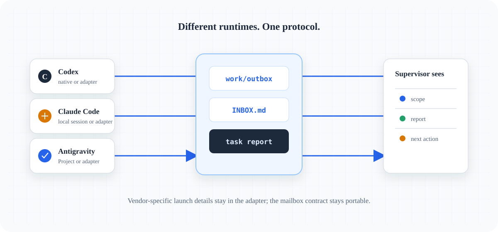

The practical path
From a light goal
to your first handover.
UseAgent is easiest when every runtime sees the same repository. This guide makes the first ten minutes concrete.

You need Python 3.11+, a prepared project repository and at least one real worker runtime with local file and shell access.
Quickstart
Place the UseAgent control plane in the target repository, then initialize and validate it:
python tools/useagent.py init
python tools/useagent.py validate
python examples/multi-agent-demo/run_demo.pyRuntime roster
Register each real session with a unique id and a non-overlapping source scope. Codex, Claude Code and Antigravity are execution surfaces; supervisor, worker and reviewer are workflow roles.
python tools/useagent.py agent register
--id claude-web --role worker
--scope src/frontend --scope tests/frontend
--capability web --max-active 1First cycle
- Prompt the supervisor.
Give it the goal, the real worker ids and the constraints. It will create the roadmap and scoped tasks.
- Dispatch and pull.
Run
python tools/useagent.py supervisor cycle. Each worker opens its generated outbox prompt and runsworker pull --agent <id>. - Report evidence.
The worker changes only its claimed scope, runs requested checks and submits
task report. - Return to the supervisor.
Run the next cycle. It ingests reports, runs QA and records the next action in
work/SUPERVISOR_REPORT.md.
Automatic worker intake
If your runtime has a local CLI or adapter, configure one argv runner once and let a bounded worker run pull the assignment, invoke it and verify the report.
python tools/useagent.py agent register
--id codex-api --role worker
--scope src/backend
--runner-arg=python
--runner-arg=tools/codex_worker_adapter.py
--runner-arg=--assignment
--runner-arg={assignment_path}
python tools/useagent.py worker run --agent codex-api --max-tasks 1The command is never passed through a shell, runner output is saved as evidence, and a missing report becomes a failed report. Manual worker pull remains the default for runtimes without an adapter.
Hướng dẫn nhanh bằng tiếng Việt
Đặt control plane trong cùng repository với application. Đăng ký từng runtime thật bằng id duy nhất, giao scope không chồng lấn, rồi gửi cho supervisor một goal ngắn. Prompt đầy đủ cho worker nằm trong work/outbox/; worker chỉ cần pull, sửa trong scope và report bằng CLI.